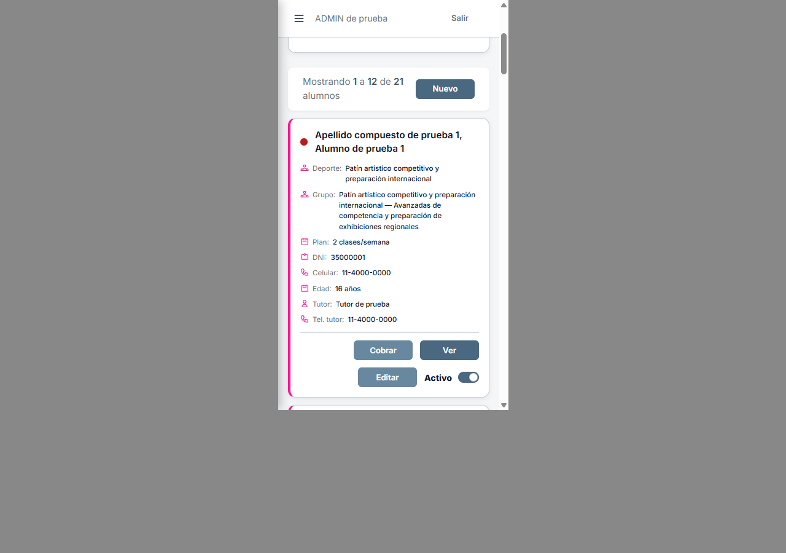
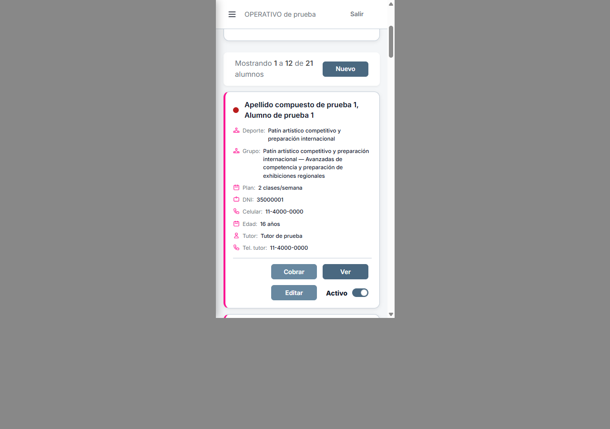
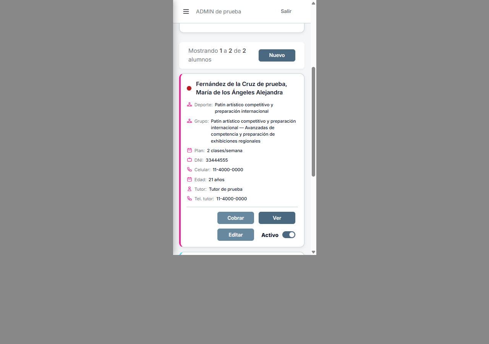
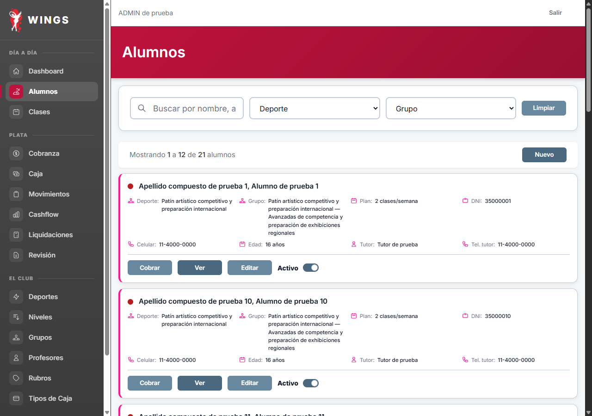

A7 · Botones alineados
08/10/2026. En celular, Cobrar y Editar comparten columna; Ver y Nuevo comparten columna. Escritorio conserva las tres imágenes anteriores exactamente. Ajuste local, pendiente de revisión independiente del paquete.
Celular · ADMIN · Antes / Después



Celular · OPERATIVO

Celular · Nombre largo

Escritorio · ADMIN

Escritorio OPERATIVO · Escritorio, nombre largo · Login de control · Mediciones.


Medición real a 375 px: Cobrar y Editar empiezan en x=116; Ver y Nuevo empiezan en x=224 y terminan en x=320. Botones 96×32 px. Las tres imágenes de escritorio son idénticas por SHA256 al antes.
Respuestas reales de Wings con datos ficticios de wings_testing_codex. Marco iframe 375×667 dentro de Chrome 1280×900; las capturas incluyen nombre, datos y acciones. CSS exclusivo del listado de Alumnos bajo 640 px.